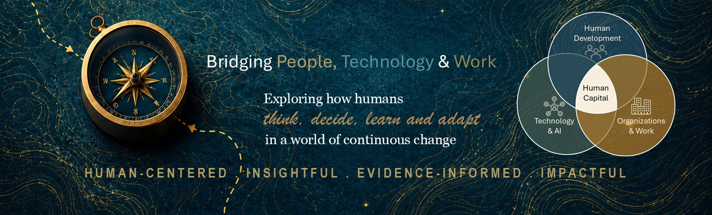

For over 20 years, I have partnered with organizations to solve capability challenges through learning, change management and AI-enabled transformation. I believe better decisions begin with understanding the real business problem — not simply delivering more training.
My work combines learning architecture, coaching, change management and responsible AI adoption to help people build confidence, capability and lasting behavioural change.
Understand the business challenge before recommending a solution.
Learning should improve judgement, not just knowledge.
Use AI responsibly to augment people, not replace them.
Create sustainable behaviour change through practical solutions.
Structured a practical lens for where Microsoft Copilot and related AI tools can support learning workflows — and where human judgement remains essential.
Designed blended solutions across self-paced eLearning, VLC/VILT, job aids and performance support.
Owned and governed learning curriculum for reconciliations, securities operations and risk/compliance teams.
Delivered coaching focused on performance, mindset and behaviour change.
A decision scaffolding concept to help professionals move from messy problem situations to clearer, testable solutions.
A behaviour-focused concept to help first-year college students build smart money habits early.
An AI-assisted BAU learning design support concept that generates first-pass learner profiles, learning barriers and design recommendations.
How approved organizational knowledge can be translated into practical learning, job aids and performance support while preserving human judgement.
A curated view of the books, courses and ideas that shape how I think about learning, change, human behaviour, responsible AI and capability building.
Diagnose the real problem before recommending a learning solution.
Use cognitive science to make digital learning clearer and more effective.
Design support around awareness, desire, knowledge, ability and reinforcement.
Think beyond tool rollout and design for how people actually work.
Strengthen conversations, feedback, psychological safety and leadership practice.
Understand people as whole humans, not just learners or employees.
Look for original value, not just incremental improvement.
How AI changes work, roles, judgement, learning and capability building.
A reflection on using learner profiles to understand readiness, barriers and design support before building a BAU learning solution.
Read on LinkedIn →In learning, change and workforce transformation, we are constantly turning raw organizational input into structured capability.
Read on LinkedIn →What perfume stores and wine tasters know about resetting attention — and what it means for how we design learning.
Read on LinkedIn →Let's connect to discuss capability building, learning strategy, change management and responsible AI adoption.
Get in Touch →